Urwid Tutorial¶
Minimal Application¶

This program displays the string Hello World in the top left corner of the
screen and will run until interrupted with CTRL+C (^C).
1from __future__ import annotations
2
3import urwid
4
5txt = urwid.Text("Hello World")
6fill = urwid.Filler(txt, "top")
7loop = urwid.MainLoop(fill)
8loop.run()
The txt
Textwidget handles formatting blocks of text, wrapping to the next line when necessary. Widgets like this are called “flow widgets” because their sizing can have a number of columns given, in this case the full screen width, then they will flow to fill as many rows as necessary.The fill
Fillerwidget fills in blank lines above or below flow widgets so that they can be displayed in a fixed number of rows. This Filler will align our Text to the top of the screen, filling all the rows below with blank lines. Widgets which are given both the number of columns and number of rows they must be displayed in are called “box widgets”.The
MainLoopclass handles displaying our widgets as well as accepting input from the user. The widget passed toMainLoopis called the “topmost” widget. The topmost widget is used to render the whole screen and so it must be a box widget. In this case our widgets can’t handle any user input so we need to interrupt the program to exit with ^C.
Global Input¶
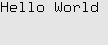 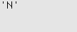
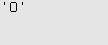
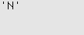
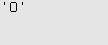

This program initially displays the string Hello World, then it displays
each key pressed, exiting when the user presses Q.
1from __future__ import annotations
2
3import urwid
4
5
6def show_or_exit(key: str) -> None:
7 if key in {"q", "Q"}:
8 raise urwid.ExitMainLoop()
9 txt.set_text(repr(key))
10
11
12txt = urwid.Text("Hello World")
13fill = urwid.Filler(txt, "top")
14loop = urwid.MainLoop(fill, unhandled_input=show_or_exit)
15loop.run()
The
MainLoopclass has an optional function parameter unhandled_input. This function will be called once for each keypress that is not handled by the widgets being displayed. Since none of the widgets being displayed here handle input, every key the user presses will be passed to the show_or_exit function.The
ExitMainLoopexception is used to exit cleanly from theMainLoop.run()function when the user presses Q. All other input is displayed by replacing the current Text widget’s content.
Display Attributes¶
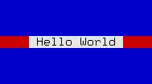 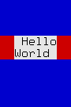 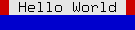
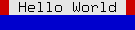
This program displays the string Hello World in the center of the screen.
It uses different attributes for the text, the space on either side of the text
and the space above and below the text. It waits for a keypress before exiting.
The screenshots above show how these widgets react to being resized.
1from __future__ import annotations
2
3import urwid
4
5
6def exit_on_q(key: str) -> None:
7 if key in {"q", "Q"}:
8 raise urwid.ExitMainLoop()
9
10
11palette = [
12 ("banner", "black", "light gray"),
13 ("streak", "black", "dark red"),
14 ("bg", "black", "dark blue"),
15]
16
17txt = urwid.Text(("banner", " Hello World "), align="center")
18map1 = urwid.AttrMap(txt, "streak")
19fill = urwid.Filler(map1)
20map2 = urwid.AttrMap(fill, "bg")
21loop = urwid.MainLoop(map2, palette, unhandled_input=exit_on_q)
22loop.run()
Display attributes are defined as part of a palette. Valid foreground, background and setting values are documented in Foreground and Background Settings A palette is a list of tuples containing:
Name of the display attribute, typically a string
Foreground color and settings for 16-color (normal) mode
Background color for normal mode
Settings for monochrome mode (optional)
Foreground color and settings for 88 and 256-color modes (optional, see next example)
Background color for 88 and 256-color modes (optional)
A
Textwidget is created containing the string" Hello World "with display attribute'banner'. The attributes of text in a Text widget is set by using a (attribute, text) tuple instead of a simple text string. Display attributes will flow with the text, and multiple display attributes may be specified by combining tuples into a list. This format is called Text Markup.An
AttrMapwidget is created to wrap the text widget with display attribute'streak'.AttrMapwidgets allow you to map any display attribute to any other display attribute, but by default they will set the display attribute of everything that does not already have a display attribute. In this case the text has an attribute, so only the areas around the text used for alignment will have the new attribute.A second
AttrMapwidget is created to wrap theFillerwidget with attribute'bg'.
When this program is run you can now clearly see the separation of the text, the alignment around the text, and the filler above and below the text.
See also
High Color Modes¶

This program displays the string Hello World in the center of the screen.
It uses a number of 256-color-mode colors to decorate the text,
and will work in any terminal that supports 256-color mode. It will exit when
Q is pressed.
1from __future__ import annotations
2
3import urwid
4
5
6def exit_on_q(key):
7 if key in {"q", "Q"}:
8 raise urwid.ExitMainLoop()
9
10
11palette = [
12 ("banner", "", "", "", "#ffa", "#60d"),
13 ("streak", "", "", "", "g50", "#60a"),
14 ("inside", "", "", "", "g38", "#808"),
15 ("outside", "", "", "", "g27", "#a06"),
16 ("bg", "", "", "", "g7", "#d06"),
17]
18
19placeholder = urwid.SolidFill()
20loop = urwid.MainLoop(placeholder, palette, unhandled_input=exit_on_q)
21loop.screen.set_terminal_properties(colors=256)
22loop.widget = urwid.AttrMap(placeholder, "bg")
23loop.widget.original_widget = urwid.Filler(urwid.Pile([]))
24
25div = urwid.Divider()
26outside = urwid.AttrMap(div, "outside")
27inside = urwid.AttrMap(div, "inside")
28txt = urwid.Text(("banner", " Hello World "), align="center")
29streak = urwid.AttrMap(txt, "streak")
30pile = loop.widget.base_widget # .base_widget skips the decorations
31for item in (outside, inside, streak, inside, outside):
32 pile.contents.append((item, pile.options()))
33
34loop.run()
This palette only defines values for the high color foreground and backgrounds, because only the high colors will be used. A real application should define values for all the modes in their palette. Valid foreground, background and setting values are documented in Foreground and Background Settings.
Behind the scenes our
MainLoopclass has created araw_display.Screenobject for drawing the screen. The program is put into 256-color mode by using the screen object’sset_terminal_properties()method.
This example also demonstrates how you can build the widgets to display in a top-down order instead of the usual bottom-up order. In some places we need to use a placeholder widget because we must provide a widget before the correct one has been created.
We change the topmost widget used by the
MainLoopby assigning to itsMainLoop.widgetproperty.Decoration Widgets like
AttrMaphave anoriginal_widgetproperty that we can assign to change the widget they wrap.Dividerwidgets are used to create blank lines, colored withAttrMap.Container Widgets like
Pilehave acontentsproperty that we can treat like a list of (widget, options) tuples.Pile.contentssupports normal list operations includingappend()to add child widgets.Pile.options()is used to generate the default options for the new child widgets.
Question and Answer¶
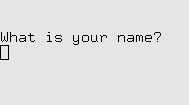 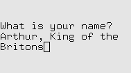
This program asks for your name then responds Nice to meet you, (your
name).
1from __future__ import annotations
2
3import urwid
4
5
6def exit_on_q(key: str) -> None:
7 if key in {"q", "Q"}:
8 raise urwid.ExitMainLoop()
9
10
11class QuestionBox(urwid.Filler):
12 def keypress(self, size, key: str) -> str | None:
13 if key != "enter":
14 return super().keypress(size, key)
15 self.original_widget = urwid.Text(
16 f"Nice to meet you,\n{edit.edit_text}.\n\nPress Q to exit.",
17 )
18 return None
19
20
21edit = urwid.Edit("What is your name?\n")
22fill = QuestionBox(edit)
23loop = urwid.MainLoop(fill, unhandled_input=exit_on_q)
24loop.run()
The Edit widget is based on the Text widget but it accepts
keyboard input for entering text, making corrections and
moving the cursor around with the HOME, END and arrow keys.
Here we are customizing the Filler decoration widget that is holding
our Edit widget by subclassing it and defining a new keypress()
method. Customizing decoration or container widgets to handle input this way
is a common pattern in Urwid applications. This pattern is easier to maintain
and extend than handling all special input in an unhandled_input function.
In QuestionBox.keypress() all keypresses except ENTER are passed along to the default
Filler.keypress()which sends them to the childEdit.keypress()method.Note that names containing Q can be entered into the
Editwidget without causing the program to exit becauseEdit.keypress()indicates that it has handled the key by returningNone. SeeWidget.keypress()for more information.When ENTER is pressed the child widget
original_widgetis changed to aTextwidget.Textwidgets don’t handle any keyboard input so all input ends up in the unhandled_input function exit_on_q, allowing the user to exit the program.
Signal Handlers¶


 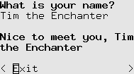
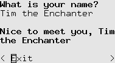
This program asks for your name and responds Nice to meet you, (your name)
while you type your name. Press DOWN then SPACE or ENTER to exit.
1from __future__ import annotations
2
3import typing
4
5import urwid
6
7palette = [("I say", "default,bold", "default", "bold")]
8ask = urwid.Edit(("I say", "What is your name?\n"))
9reply = urwid.Text("")
10button_inst = urwid.Button("Exit")
11div = urwid.Divider()
12pile = urwid.Pile([ask, div, reply, div, button_inst])
13top = urwid.Filler(pile, valign="top")
14
15
16def on_ask_change(_edit: urwid.Edit, new_edit_text: str) -> None:
17 reply.set_text(("I say", f"Nice to meet you, {new_edit_text}"))
18
19
20def on_exit_clicked(_button: urwid.Button) -> typing.NoReturn:
21 raise urwid.ExitMainLoop()
22
23
24urwid.connect_signal(ask, "change", on_ask_change)
25urwid.connect_signal(button_inst, "click", on_exit_clicked)
26
27urwid.MainLoop(top, palette).run()
An
Editwidget and aTextreply widget are created, like in the previous example.The
connect_signal()function is used to attach our on_ask_change() function to ourEditwidget’s'change'signal. Now any time the content of theEditwidget changes on_ask_change() will be called and passed the new content.Finally we attach our on_exit_clicked() function to our exit
Button’s'click'signal.on_ask_change() updates the reply text as the user enters their name and on_exit_click() exits.
Multiple Questions¶
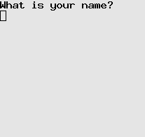


This program asks for your name and responds Nice to meet you, (your name).
It then asks again, and again. Old values may be changed and the responses will
be updated when you press ENTER. ENTER on a blank line exits.
1from __future__ import annotations
2
3import urwid
4
5
6def question():
7 return urwid.Pile([urwid.Edit(("I say", "What is your name?\n"))])
8
9
10def answer(name):
11 return urwid.Text(("I say", f"Nice to meet you, {name}\n"))
12
13
14class ConversationListBox(urwid.ListBox):
15 def __init__(self) -> None:
16 body = urwid.SimpleFocusListWalker([question()])
17 super().__init__(body)
18
19 def keypress(self, size: tuple[int, int], key: str) -> str | None:
20 key = super().keypress(size, key)
21 if key != "enter":
22 return key
23 name = self.focus[0].edit_text
24 if not name:
25 raise urwid.ExitMainLoop()
26 # replace or add response
27 self.focus.contents[1:] = [(answer(name), self.focus.options())]
28 pos = self.focus_position
29 # add a new question
30 self.body.insert(pos + 1, question())
31 self.focus_position = pos + 1
32 return None
33
34
35palette = [("I say", "default,bold", "default")]
36urwid.MainLoop(ConversationListBox(), palette).run()
ListBox widgets let you scroll through a number of flow widgets
vertically. It handles UP, DOWN, PAGE UP and PAGE DOWN keystrokes
and changing the focus for you. ListBox Contents are managed by
a “list walker”, one of the list walkers that is easiest to use is
SimpleFocusListWalker.
SimpleFocusListWalker is like a normal python list of widgets, but
any time you insert or remove widgets the focus position is updated
automatically.
Here we are customizing our ListBox’s keypress handling by overriding
it in a subclass.
The question() function is used to build widgets to communicate with the user. Here we return a
Pilewidget with a singleEditwidget to start.We retrieve the name entered with
ListBox.focusto get thePilein focus, the standard container widget method[0]to get the first child of the pile andEdit.edit_textto get the user-entered text.For the response we use the fact that we can treat
Pile.contentslike a list of (widget, options) tuples to create or replace any existing response by assigning a one-tuple list to contents[1:]. We create the default options usingPile.options().To add another question after the current one we treat our
SimpleFocusListWalkerstored asListBox.bodylike a normal list of widgets by calling insert(), then update the focus position to the widget we just created.
Simple Menu¶


We can create a very simple menu using a list of Button widgets.
This program lets you choose an option then repeats what you chose.
1from __future__ import annotations
2
3import typing
4
5import urwid
6
7if typing.TYPE_CHECKING:
8 from collections.abc import Iterable
9
10choices = "Chapman Cleese Gilliam Idle Jones Palin".split()
11
12
13def menu(title: str, choices_: Iterable[str]) -> urwid.ListBox:
14 body = [urwid.Text(title), urwid.Divider()]
15 for c in choices_:
16 button = urwid.Button(c)
17 urwid.connect_signal(button, "click", item_chosen, c)
18 body.append(urwid.AttrMap(button, None, focus_map="reversed"))
19 return urwid.ListBox(urwid.SimpleFocusListWalker(body))
20
21
22def item_chosen(button: urwid.Button, choice: str) -> None:
23 response = urwid.Text(["You chose ", choice, "\n"])
24 done = urwid.Button("Ok")
25 urwid.connect_signal(done, "click", exit_program)
26 main.original_widget = urwid.Filler(
27 urwid.Pile(
28 [
29 response,
30 urwid.AttrMap(done, None, focus_map="reversed"),
31 ]
32 )
33 )
34
35
36def exit_program(button: urwid.Button) -> None:
37 raise urwid.ExitMainLoop()
38
39
40main = urwid.Padding(menu("Pythons", choices), left=2, right=2)
41top = urwid.Overlay(
42 main,
43 urwid.SolidFill("\N{MEDIUM SHADE}"),
44 align=urwid.CENTER,
45 width=(urwid.RELATIVE, 60),
46 valign=urwid.MIDDLE,
47 height=(urwid.RELATIVE, 60),
48 min_width=20,
49 min_height=9,
50)
51urwid.MainLoop(top, palette=[("reversed", "standout", "")]).run()
menu() builds a
ListBoxwith a title and a sequence ofButtonwidgets. Each button has its'click'signal attached to item_chosen, with item name is passed as data. The buttons are decorated with anAttrMapthat applies a display attribute when a button is in focus.item_chosen() replaces the menu displayed with text indicating the users’ choice.
exit_program() causes the program to exit on any keystroke.
The menu is created and decorated with an
Overlayusing aSolidFillas the background. TheOverlayis given a miniumum width and height but is allowed to expand to 60% of the available space if the user’s terminal window is large enough.
Cascading Menu¶


A nested menu effect can be created by having some buttons open new menus. This program lets you choose an option from a nested menu that cascades across the screen. You may return to previous menus by pressing ESC.
1from __future__ import annotations
2
3import typing
4
5import urwid
6
7if typing.TYPE_CHECKING:
8 from collections.abc import Callable, Hashable, Iterable
9
10
11def menu_button(
12 caption: str | tuple[Hashable, str] | list[str | tuple[Hashable, str]],
13 callback: Callable[[urwid.Button], typing.Any],
14) -> urwid.AttrMap:
15 button = urwid.Button(caption, on_press=callback)
16 return urwid.AttrMap(button, None, focus_map="reversed")
17
18
19def sub_menu(
20 caption: str | tuple[Hashable, str] | list[str | tuple[Hashable, str]],
21 choices: Iterable[urwid.Widget],
22) -> urwid.Widget:
23 contents = menu(caption, choices)
24
25 def open_menu(button: urwid.Button) -> None:
26 return top.open_box(contents)
27
28 return menu_button([caption, "..."], open_menu)
29
30
31def menu(
32 title: str | tuple[Hashable, str] | list[str | tuple[Hashable, str]],
33 choices: Iterable[urwid.Widget],
34) -> urwid.ListBox:
35 body = [urwid.Text(title), urwid.Divider(), *choices]
36 return urwid.ListBox(urwid.SimpleFocusListWalker(body))
37
38
39def item_chosen(button: urwid.Button) -> None:
40 response = urwid.Text(["You chose ", button.label, "\n"])
41 done = menu_button("Ok", exit_program)
42 top.open_box(urwid.Filler(urwid.Pile([response, done])))
43
44
45def exit_program(button: urwid.Button) -> typing.NoReturn:
46 raise urwid.ExitMainLoop()
47
48
49menu_top = menu(
50 "Main Menu",
51 [
52 sub_menu(
53 "Applications",
54 [
55 sub_menu(
56 "Accessories",
57 [
58 menu_button("Text Editor", item_chosen),
59 menu_button("Terminal", item_chosen),
60 ],
61 ),
62 ],
63 ),
64 sub_menu(
65 "System",
66 [
67 sub_menu(
68 "Preferences",
69 [menu_button("Appearance", item_chosen)],
70 ),
71 menu_button("Lock Screen", item_chosen),
72 ],
73 ),
74 ],
75)
76
77
78class CascadingBoxes(urwid.WidgetPlaceholder):
79 max_box_levels = 4
80
81 def __init__(self, box: urwid.Widget) -> None:
82 super().__init__(urwid.SolidFill("/"))
83 self.box_level = 0
84 self.open_box(box)
85
86 def open_box(self, box: urwid.Widget) -> None:
87 self.original_widget = urwid.Overlay(
88 urwid.LineBox(box),
89 self.original_widget,
90 align=urwid.CENTER,
91 width=(urwid.RELATIVE, 80),
92 valign=urwid.MIDDLE,
93 height=(urwid.RELATIVE, 80),
94 min_width=24,
95 min_height=8,
96 left=self.box_level * 3,
97 right=(self.max_box_levels - self.box_level - 1) * 3,
98 top=self.box_level * 2,
99 bottom=(self.max_box_levels - self.box_level - 1) * 2,
100 )
101 self.box_level += 1
102
103 def keypress(self, size, key: str) -> str | None:
104 if key == "esc" and self.box_level > 1:
105 self.original_widget = self.original_widget[0]
106 self.box_level -= 1
107 return None
108
109 return super().keypress(size, key)
110
111
112top = CascadingBoxes(menu_top)
113urwid.MainLoop(top, palette=[("reversed", "standout", "")]).run()
menu_button() returns an
AttrMap-decoratedButtonand attaches a callback to its'click'signal. This function is used for both sub-menus and final selection buttons.sub_menu() creates a menu button and a closure that will open the menu when that button is clicked. Notice that text markup is used to add
'...'to the end of the caption passed to menu_button().menu() builds a
ListBoxwith a title and a sequence of widgets.item_chosen() displays the users’ choice similar to the previous example.
menu_top is the top level menu with all of its child menus and options built using the functions above.
This example introduces WidgetPlaceholder. WidgetPlaceholder is a
decoration widget that does nothing to the widget it
decorates. It is useful if you need a simple way to replace a widget that doesn’t
involve knowing its position in a container, or in this
case as a base class for a widget that will be replacing its own contents regularly.
CascadingBoxes is a new widget that extends
WidgetPlaceholder. It provides an open_box() method that displays a box widget box “on top of” all the previous content with anOverlayand aLineBox. The position of each successive box is shifted right and down from the previous one.CascadingBoxes.keypress() intercepts ESC keys to cause the current box to be removed and the previous one to be shown. This allows the user to return to a previous menu level.
Horizontal Menu¶
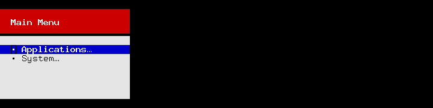


This example is like the previous but new menus appear on the right and push old menus off the left side of the screen. The look of buttons and other menu elements are heavily customized and new widget classes are used instead of factory functions.
1from __future__ import annotations
2
3import typing
4
5import urwid
6
7if typing.TYPE_CHECKING:
8 from collections.abc import Callable, Hashable, Iterable
9
10
11class MenuButton(urwid.Button):
12 def __init__(
13 self,
14 caption: str | tuple[Hashable, str] | list[str | tuple[Hashable, str]],
15 callback: Callable[[MenuButton], typing.Any],
16 ) -> None:
17 super().__init__("", on_press=callback)
18 self._w = urwid.AttrMap(
19 urwid.SelectableIcon([" \N{BULLET} ", caption], 2),
20 None,
21 "selected",
22 )
23
24
25class SubMenu(urwid.WidgetWrap[MenuButton]):
26 def __init__(
27 self,
28 caption: str | tuple[Hashable, str],
29 choices: Iterable[urwid.Widget],
30 ) -> None:
31 super().__init__(MenuButton([caption, "\N{HORIZONTAL ELLIPSIS}"], self.open_menu))
32 line = urwid.Divider("\N{LOWER ONE QUARTER BLOCK}")
33 listbox = urwid.ListBox(
34 urwid.SimpleFocusListWalker(
35 [
36 urwid.AttrMap(urwid.Text(["\n ", caption]), "heading"),
37 urwid.AttrMap(line, "line"),
38 urwid.Divider(),
39 *choices,
40 urwid.Divider(),
41 ]
42 )
43 )
44 self.menu = urwid.AttrMap(listbox, "options")
45
46 def open_menu(self, button: MenuButton) -> None:
47 top.open_box(self.menu)
48
49
50class Choice(urwid.WidgetWrap[MenuButton]):
51 def __init__(
52 self,
53 caption: str | tuple[Hashable, str] | list[str | tuple[Hashable, str]],
54 ) -> None:
55 super().__init__(MenuButton(caption, self.item_chosen))
56 self.caption = caption
57
58 def item_chosen(self, button: MenuButton) -> None:
59 response = urwid.Text([" You chose ", self.caption, "\n"])
60 done = MenuButton("Ok", exit_program)
61 response_box = urwid.Filler(urwid.Pile([response, done]))
62 top.open_box(urwid.AttrMap(response_box, "options"))
63
64
65def exit_program(key):
66 raise urwid.ExitMainLoop()
67
68
69menu_top = SubMenu(
70 "Main Menu",
71 [
72 SubMenu(
73 "Applications",
74 [
75 SubMenu(
76 "Accessories",
77 [
78 Choice("Text Editor"),
79 Choice("Terminal"),
80 ],
81 )
82 ],
83 ),
84 SubMenu(
85 "System",
86 [
87 SubMenu("Preferences", [Choice("Appearance")]),
88 Choice("Lock Screen"),
89 ],
90 ),
91 ],
92)
93
94palette = [
95 (None, "light gray", "black"),
96 ("heading", "black", "light gray"),
97 ("line", "black", "light gray"),
98 ("options", "dark gray", "black"),
99 ("focus heading", "white", "dark red"),
100 ("focus line", "black", "dark red"),
101 ("focus options", "black", "light gray"),
102 ("selected", "white", "dark blue"),
103]
104focus_map = {"heading": "focus heading", "options": "focus options", "line": "focus line"}
105
106
107class HorizontalBoxes(urwid.Columns):
108 def __init__(self) -> None:
109 super().__init__([], dividechars=1)
110
111 def open_box(self, box: urwid.Widget) -> None:
112 if self.contents:
113 del self.contents[self.focus_position + 1 :]
114 self.contents.append(
115 (
116 urwid.AttrMap(box, "options", focus_map),
117 self.options(urwid.GIVEN, 24),
118 )
119 )
120 self.focus_position = len(self.contents) - 1
121
122
123top = HorizontalBoxes()
124top.open_box(menu_top.menu)
125urwid.MainLoop(urwid.Filler(top, "middle", 10), palette).run()
MenuButton is a customized
Buttonwidget.ButtonusesWidgetWrapto create its appearance and this class replaces the display widget created byButtonby the wrapped widget in self._w.SubMenu is implemented with a MenuButton but uses
WidgetWrapto hide the implementation instead of inheriting from MenuButton. The constructor builds a widget for the menu that this button will open and stores it in self.menu.Choice is like SubMenu but displays the item chosen instead of another menu.
The palette used in this example includes an entry with the special name
None. The foreground and background specified in this entry are used
as a default when no other display attribute is specified.
HorizontalBoxes arranges the menus displayed similar to the previous example. There is no special handling required for going to previous menus here because
Columnsalready handles switching focus when LEFT or RIGHT is pressed.AttrMapwith the focus_map dict is used to change the appearance of a number of the display attributes when a menu is in focus.
Adventure Game¶

 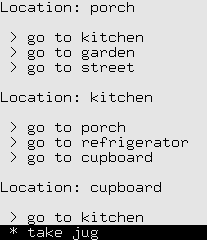
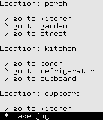

We can use the same sort of code to build a simple adventure game. Instead of menus we have “places” and instead of submenus and parent menus we just have “exits”. This example scrolls previous places off the top of the screen, allowing you to scroll back to view but not interact with previous places.
1from __future__ import annotations
2
3import typing
4
5import urwid
6
7if typing.TYPE_CHECKING:
8 from collections.abc import Callable, Hashable, MutableSequence
9
10
11class ActionButton(urwid.Button):
12 def __init__(
13 self,
14 caption: str | tuple[Hashable, str] | list[str | tuple[Hashable, str]],
15 callback: Callable[[ActionButton], typing.Any],
16 ) -> None:
17 super().__init__("", on_press=callback)
18 self._w = urwid.AttrMap(urwid.SelectableIcon(caption, 1), None, focus_map="reversed")
19
20
21class Place(urwid.WidgetWrap[ActionButton]):
22 def __init__(self, name: str, choices: MutableSequence[urwid.Widget]) -> None:
23 super().__init__(ActionButton([" > go to ", name], self.enter_place))
24 self.heading = urwid.Text(["\nLocation: ", name, "\n"])
25 self.choices = choices
26 # create links back to ourself
27 for child in choices:
28 getattr(child, "choices", []).insert(0, self)
29
30 def enter_place(self, button: ActionButton) -> None:
31 game.update_place(self)
32
33
34class Thing(urwid.WidgetWrap[ActionButton]):
35 def __init__(self, name: str) -> None:
36 super().__init__(ActionButton([" * take ", name], self.take_thing))
37 self.name = name
38
39 def take_thing(self, button: ActionButton) -> None:
40 self._w = urwid.Text(f" - {self.name} (taken)")
41 game.take_thing(self)
42
43
44def exit_program(button: ActionButton) -> typing.NoReturn:
45 raise urwid.ExitMainLoop()
46
47
48map_top = Place(
49 "porch",
50 [
51 Place(
52 "kitchen",
53 [
54 Place("refrigerator", []),
55 Place("cupboard", [Thing("jug")]),
56 ],
57 ),
58 Place(
59 "garden",
60 [
61 Place(
62 "tree",
63 [
64 Thing("lemon"),
65 Thing("bird"),
66 ],
67 ),
68 ],
69 ),
70 Place(
71 "street",
72 [
73 Place("store", [Thing("sugar")]),
74 Place(
75 "lake",
76 [Place("beach", [])],
77 ),
78 ],
79 ),
80 ],
81)
82
83
84class AdventureGame:
85 def __init__(self) -> None:
86 self.log = urwid.SimpleFocusListWalker([])
87 self.top = urwid.ListBox(self.log)
88 self.inventory = set()
89 self.update_place(map_top)
90
91 def update_place(self, place: Place) -> None:
92 if self.log: # disable interaction with previous place
93 self.log[-1] = urwid.WidgetDisable(self.log[-1])
94 self.log.append(urwid.Pile([place.heading, *place.choices]))
95 self.top.focus_position = len(self.log) - 1
96 self.place = place
97
98 def take_thing(self, thing: Thing) -> None:
99 self.inventory.add(thing.name)
100 if self.inventory >= {"sugar", "lemon", "jug"}:
101 response = urwid.Text("You can make lemonade!\n")
102 done = ActionButton(" - Joy", exit_program)
103 self.log[:] = [response, done]
104 else:
105 self.update_place(self.place)
106
107
108game = AdventureGame()
109urwid.MainLoop(game.top, palette=[("reversed", "standout", "")]).run()
This example starts to show some separation between the application logic and the widgets that have been created. The AdventureGame class is responsible for all the changes that happen through the game and manages the topmost widget, but isn’t a widget itself. This is a good pattern to follow as your application grows larger.